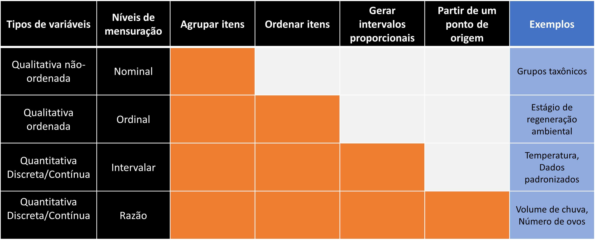

library(tidyverse)
library(flextable)
#library(officer)1 Estrutura e tipo de dados
Pacotes e funções utilizadas no capítulo
Utilizamos métodos de estatística descritiva para evidenciar informações relevantes de um conjunto de dados. Em grande parte, a apresentação destas informações passa pela construção de tabelas, gráficos e pelo cálculo de descritores que resumem algumas características das variáveis envolvidas (ex. média aritmética, desvio padrão, frequência relativa, padrões de associação). Neste capítulo iremos tratar a estrutura de um conjunto de dados e dos tipos de variáveis mais comuns.
1.1 Um exemplo
Considere a tabela abaixo, construída a partir do livro de Biocenoses em Reservatórios: padrões espaciais e temporais (Rodrigues et al. 2005).
res = read_delim("datasets/Reservatorios_Parana_parcial.csv",
locale = locale(encoding = "latin1"))res %>%
flextable() %>%
fit_to_width(max_width = 8)Reservatorio | Bacia | Fechamento | Area | Trofia | pH | Condutividade | Alcalinidade | P.total | Riqueza | CPUE |
Cavernoso | Iguacu | 1,965 | 2.90 | Oligotrófico | 7.4 | 33.1 | 139.80 | 7.8 | 18 | 9.22 |
Curucaca | Iguacu | 1,982 | 2.00 | Oligotrófico | 7.0 | 32.4 | 125.70 | 4.7 | 16 | 28.73 |
Foz do Areia | Iguacu | 1,980 | 139.00 | Oligotrófico | 7.3 | 35.5 | 97.00 | 14.3 | 19 | 11.59 |
Irai | Iguacu | 2,000 | 15.00 | Eutrófico | 6.9 | 50.2 | 3.30 | 53.4 | 12 | 30.76 |
JMF | Iguacu | 1,970 | 0.45 | Mesotrófico | 7.3 | 40.2 | 3.70 | 41.2 | 18 | 5.95 |
Jordao | Iguacu | 1,996 | 3.40 | Oligotrófico | 7.1 | 23.7 | 152.70 | 3.3 | 17 | 7.75 |
Passauna | Iguacu | 1,978 | 14.00 | Oligotrófico | 8.8 | 125.6 | 526.00 | 15.2 | 11 | 7.51 |
Piraquara | Iguacu | 1,979 | 3.30 | Oligotrófico | 7.1 | 22.8 | 50.67 | 4.5 | 8 | 4.01 |
Salto Caxias | Iguacu | 1,998 | 124.00 | Oligotrófico | 7.3 | 39.6 | 106.00 | 12.1 | 21 | 20.83 |
Salto do Vau | Iguacu | 1,959 | 2.90 | Oligotrófico | 6.5 | 23.2 | 279.00 | 11.0 | 8 | 2.43 |
Salto Osorio | Iguacu | 1,975 | 51.00 | Oligotrófico | 8.6 | 38.9 | 233.30 | 3.4 | 24 | 12.55 |
Salto Santiago | Iguacu | 1,979 | 208.00 | Oligotrófico | 9.2 | 39.5 | 117.60 | 13.1 | 21 | 11.73 |
Segredo | Iguacu | 1,992 | 82.50 | Oligotrófico | 7.0 | 34.5 | 165.20 | 6.4 | 22 | 13.72 |
Mourao | Ivai | 1,964 | 11.30 | Oligotrófico | 8.1 | 23.3 | 56.55 | 7.1 | 15 | 16.50 |
Patos | Ivai | 1.30 | Mesotrófico | 6.9 | 46.0 | 180.10 | 39.2 | 10 | 4.71 | |
Guaricana | Litoranea | 1,957 | 7.00 | Oligotrófico | 7.4 | 27.9 | 83.72 | 12.4 | 12 | 7.95 |
Parigot Souza | Litoranea | 1,970 | 12.00 | Oligotrófico | 7.7 | 63.6 | 259.20 | 16.9 | 12 | 13.12 |
Salto do Meio | Litoranea | 0.10 | Oligotrófico | 6.9 | 37.4 | 147.10 | 17.1 | 11 | 16.10 | |
Vossoroca | Litoranea | 1,949 | 5.10 | Mesotrófico | 7.3 | 39.8 | 156.00 | 21.9 | 14 | 11.74 |
Canoas I | Paranapanema | 1,999 | 30.85 | Oligotrófico | 7.4 | 63.3 | 234.90 | 9.9 | 35 | 17.95 |
Canoas II | Paranapanema | 1,992 | 22.50 | Oligotrófico | 7.8 | 61.2 | 9.0 | 40 | 13.86 | |
Capivara | Paranapanema | 1,975 | 419.30 | Oligotrófico | 7.5 | 58.6 | 196.00 | 5.5 | 34 | 13.04 |
Chavantes | Paranapanema | 1,970 | 400.00 | Oligotrófico | 7.6 | 57.8 | 211.80 | 7.8 | 23 | 7.35 |
Rosana | Paranapanema | 1,986 | 220.00 | 7.7 | 58.2 | 202.40 | 30 | 20.92 | ||
Salto Grande | Paranapanema | 1,958 | 12.00 | Oligotrófico | 7.1 | 62.3 | 230.10 | 10.3 | 24 | 13.67 |
Taquarucu | Paranapanema | 1,989 | 80.10 | Oligotrófico | 7.9 | 57.0 | 191.80 | 4.5 | 33 | 21.82 |
Melissa | Piriqui | 1,962 | 0.10 | Eutrófico | 6.8 | 34.0 | 68.37 | 66.9 | 12 | 6.29 |
Santa Maria | Piriqui | 0.07 | Oligotrófico | 6.8 | 41.7 | 480.10 | 14.9 | 7 | 9.40 | |
Alagados | Tibagi | 1,909 | 7.20 | Oligotrófico | 7.6 | 41.7 | 172.20 | 19.9 | 7 | 5.60 |
Apucaraninha | Tibagi | 1,958 | 10 | 2.05 | ||||||
Harmonia | Tibagi | Oligotrófico | 8.3 | 31.0 | 113.30 | 8.6 | 7 | 24.88 |
A tabela é formada por 31 linhas referentes a reservatórios do estado do Paraná e 11 colunas em que constam informações sobre cada reservatório, sendo elas:
Reservatorio: nome do reservatório;
Bacia: bacia hidrográfica (Iguacu, Ivai, Litoranea, Paranapanema, Piriqui, Tibagi);
Fechamento: ano de formação do reservatório;
Area: área em \(km^2\);
Trofia: grau de trofia (Eutrófico, Mesotrófico, Oligotrófico);
pH: pH;
Condutividade: condutividade;
Alcalinidade: alcalinidade;
P.total: fósforo total;
Riqueza: número de espécies de peixes encontradas;
CPUE: captura (kg) por unidade de esforço;
1.2 Unidades amostrais e descritores
Esta tabela está organizada no formato em que cada linha representa uma unidade amostral (UA) e cada coluna representa uma variável (VA) que descreve determinada característica desta observação. Ao longo dos próximos capítulos veremos diversos conjuntos de dados organizados neste formato.
ID | VA 1 | VA 2 | VA 3 | VA 4 | VA 5 | VA 6 | VA 7 |
UA 1 | |||||||
UA 2 | |||||||
UA 3 | |||||||
UA 4 | |||||||
UA 5 | |||||||
UA 6 | |||||||
UA 7 | |||||||
UA 8 | |||||||
UA 9 | |||||||
UA 10 |
No exemplo referentes aos reservatórios do Paraná, cada unidade amostral (linhas da tabela) é um reservatório. Os reservatórios são descritos por meio das variáveis dispostas nas colunas da tabela. O reservatório de Cavernoso por exemplo faz parte da bacia do Iguacu, foi formado no ano de 1965, tem área de 2.9 \(km^2\), pH igual a 7.4 e assim por diante.
Valores faltantes
Algumas células da tabela estão preenchidas por NA. Isto significa que a informação naquela célula não foi mensurada e que temos um dado faltante. Você deve ter muito cuidado ao lidar com este tipo de situação. Se uma linha contém muitas células sem informação, é prudente excluir esta observação das análises. Se por outro lado, uma coluna apresenta muitos valores faltantes, talvez seja prudente excluir a variável das análises. Se você não deseja ou não pode excluir a linha ou a coluna existem métodos de preenchimento de dados faltantes. No entanto, ao optar por algum destes métodos, você deve ter ter claro quais serão os efeitos de inserir uma informação à tabela de dados que efetivamente não foi mensurada.
1.3 Tipos de dados
Uma tabela de dados pode ser composta por variáveis quantitativas ou qualitativas.
Variáveis qualitativas
São variáveis não-numéricas como categorias ou rótulos. Dentre as variáveis qualitativas temos aquelas do tipo categóricas não-ordenadas e do tipo categóricas ordenadas.
Variável categórica não-ordenada: a variável Bacia classifica um reservatório como pertencente a uma determinada bacia hidrográfica. Os níveis da variável Bacia são: Iguacu, Ivai, Litoranea, Paranapanema, Piriqui, Tibagi. A variável é do tipo categórica não-ordenada, pois os níveis não possuem qualquer relação de ordenação natural entre si.
Variáveis quantitativas
São variáveis numéricas que também podem ser sub-divididas em dois grupos: discretas e contínuas.
Variáveis quantitativas discretas: envolvem quantias enumeráveis como a contagem de barcos que saem para pescar em um determinado dia, o número de peixes de um cardume. Em nosso exemplo, a variável
Riquezaé quantitativa discreta pois expressa o número de espécies de peixes encontradas em cada reservatório. Este é um número inteiro que pode assumir valor mínimo igual a 0 (nenhuma espécie) e em teoria, não tem limite superior (ainda que neste exemplo, o número máximo encontrados seja de 40 espécies).Variáveis quantitativas contínuas: envolvem quantias não-enumeráveis como a vazão em \(m^3/seg\) que verte de uma cachoeira, o volume de chuva em um determinado dia, altura da maré ou a velocidade do vento. O limite de precisão que utilizamos para representá-las depende basicamente da capacidade de mensuração dos aparelhos disponíveis. Em nosso exemplo, temos diversas variáveis deste tipo como
pH,Condutividade,Fosforo_total.
Transformando variáveis
Sempre é possível transformar variáveis quantitativas em qualitativas. Se temos uma variável medindo o comprimento de peixes desembarcados em centímetros (variável quantitativa), é possível expressá-la de forma categórica em peixes grandes e peixes pequenos (variável qualitativa). Por outro lado, se tivermos somente a informação de que um peixe é grande ou pequeno, não podemos recuperar as quantias numéricas originais. Ao transformar uma variável de quantitativa em qualitativa, algumas propriedades são perdidas.
1.4 Níveis de mensuração
Podemos organizar uma variável a partir de seu nível de mensuração (Figura 1.1), dado em: nominal, ordinal, intervalar e razão.
Nível nominal: é característico de variáveis que possuem níveis não ordenaveis. Ex. cor, grupo taxonômico, nomes de cidades, etc.
Nível ordinal: é aquele em que os níveis podem ser ordenados, embora não seja possível quantificar as diferenças entre dois níveis. Ex. i - Ordem de chegada de maratonistas em uma competição (\(1^o\),\(2^o\),\(3^o\),\(\cdots\)). ii - Condição de saneamento das cidades (ótimo, bom, ruim, péssimo). iii - Condição de saneamento das praias da baixada santista (próprio, imprórpio). No nível ordinal podemos ordenar os elementos porém não podemos quantificar as diferenças entre eles.
Nível intervalar: é aquele em que além ser possível ordenar, é possível quantificar as diferenças entre duas observações. No entanto, não há um ponto inicial natural, ou seja, um ponto zero que indique ausência da quantia. Ex. i – Temperatura: \(0^oC\) não indica ausência de temperatura, assim como \(10^oC\) não é duas vezes mais quente que \(5^oC\). Essas características são somente uma convenção relacionada à escala de mensuração da temperatura. ii - Ano do calendário: o ano zero é uma convenção do calendário, não significa ausência de tempo.
Nível de razão: é como o intervalar, porém existe um ponto zero natural. Peso igual a \(0\) kg indica ausência de peso e dez quilogramas é duas vezes mais pesado que \(5\) kg. O mesmo vale para comprimento, distância, velocidade, número de ovos.

A depender do nível de mensuração, algumas operações matemáticas podem ou não fazer sentido. Por exemplo, se uma espécie tem \(N_A = 100\) indivíduos na região A e \(N_B = 200\) na região B, a segunda região é duas vezes mais populosa pois \(\frac{N_B}{N_A} = 2\). Por outro lado, se a temperatura na região A é de \(T_A = 10^oC\) enquanto na B é de \(T_B = 20^oC\) não faz sentido fazer \(\frac{T_B}{T_A} = 2\) e dizer que B seja duas vezes mais quente que A. Ainda que matematicamente a operação seja possível nos dois exemplos, no último sua interpretação física não tem sentido.
Tipos de dados vs níveis de mensuração
Existe uma relação entre tipo de dados e nível de mensuração. Os níveis nominal e ordinal de mensuração se referem a variáveis qualitativas não-ordenadas e qualitativas ordenadas respectivamente. Já os níveis intervalar e razão se referem a variáveis quantitativas, podendo ser discretas ou contínuas.
Rodrigues, Liliana, Sidinei Magela Thomaz, Angelo Antonio Agostinho, and Luiz Carlos Gomes. 2005. Biocenoses Em Reservatórios: Padrões Espaciais e Temporais. Rima.